Don Draper pauses in the doorway of his Manhattan office. Everything except fan blades are still. Don's desk is littered with bottles and glasses.
Don walks slowly into the room, his shoes reflected in the highly polished floor.
Jeffrey Zeldman
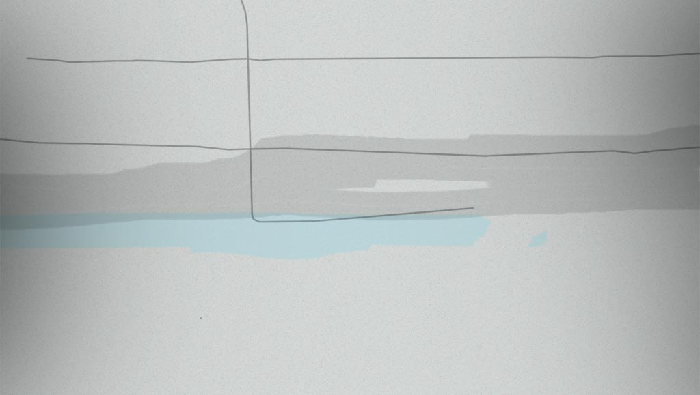As Don puts down his briefcase, we begin to get a sense that everything may not be as it seems in his world.
Sarah Parmenter
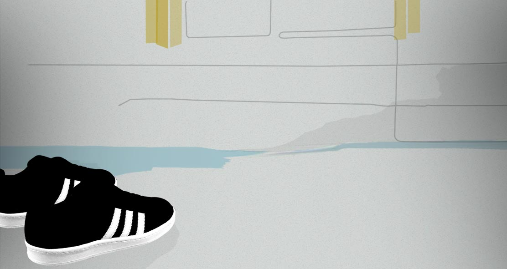Magazines begin falling to the floor.
Jason Santa Maria
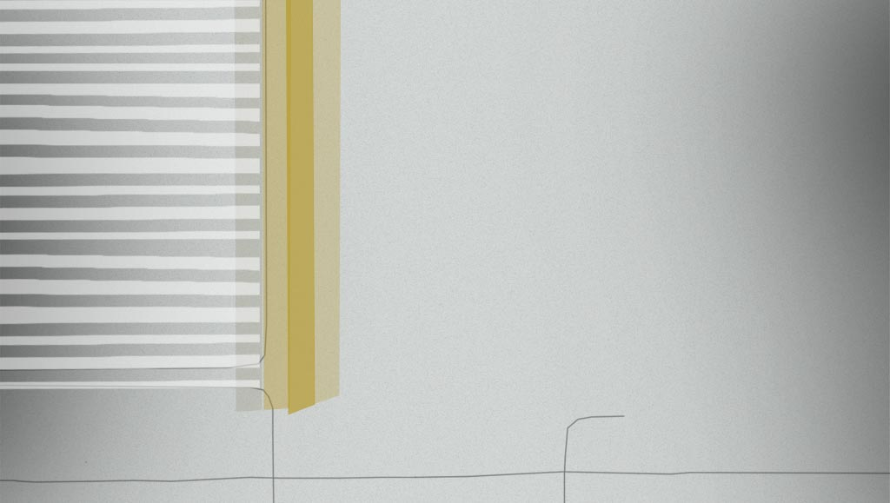 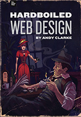 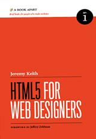 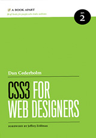As he stands motionless, the room falls apart and Don realises that none of it’s real and that it’s impossible to tell where fiction stops and life begins.
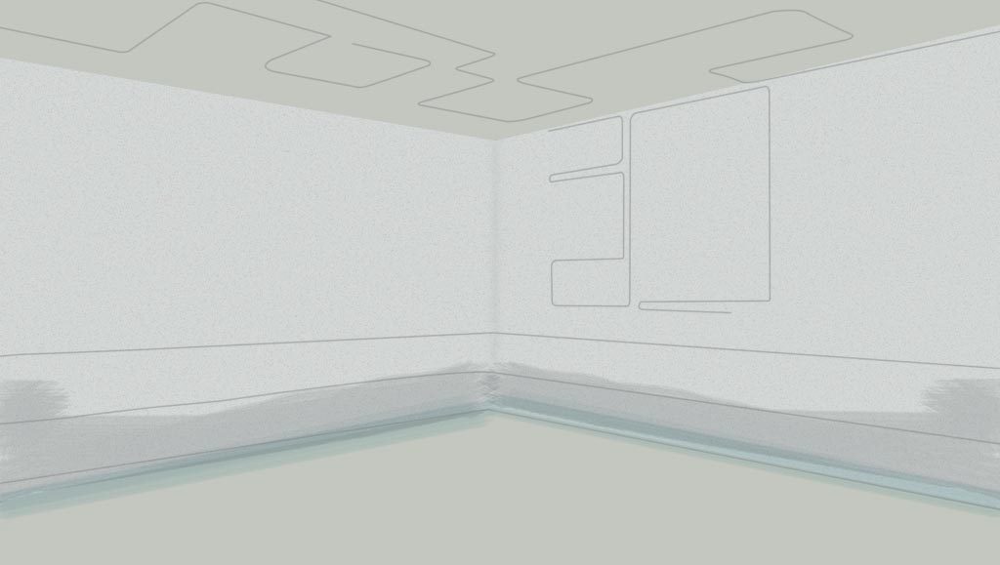


The room melts away and Don starts fall, his arms are outstretched.
As Don tumbles down, photographs from magazine advertisements merge with his own reflection.
Luke Wroblewski
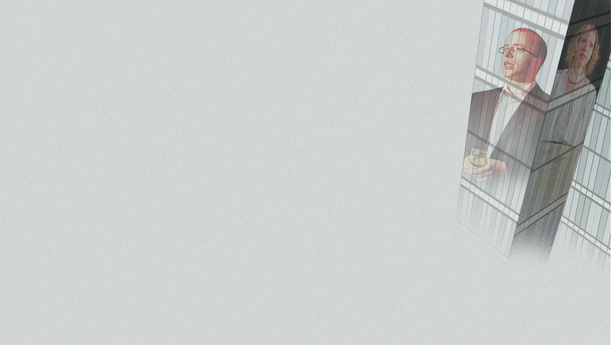Looking out from a building across the street, the helplessness of Don’s situation becomes clearer as he falls further and faster.
Eric Meyer
Jeremy Keith
Don accepts his fate and relaxes as he falls. Behind him, photographs from magazine advertisements continue to reflect in the windows.
And
Aaron Walter
Casting by
Alexa Andrzejewski &
Jeffrey Veen
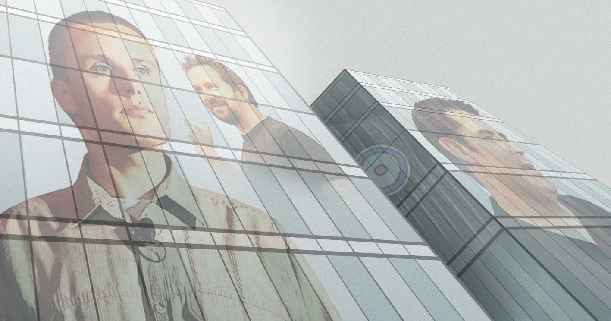
Don is in free-fall. The images behind him merge into one continuous stream. Images of alcohol.
Editor
Anthony Calzadilla
Production Designer
Andy Clarke
Of wedding bands - things that are wrong and right in his life.
Opening Night Party
(mt) Media Temple
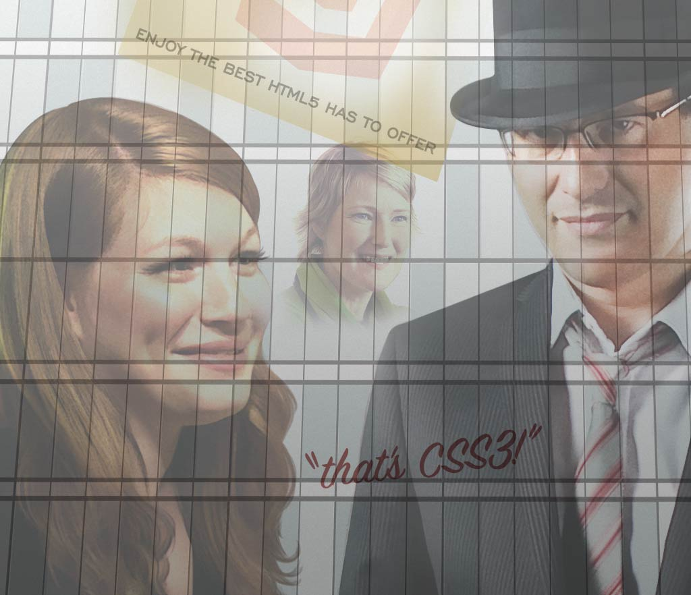
Glamourous women.
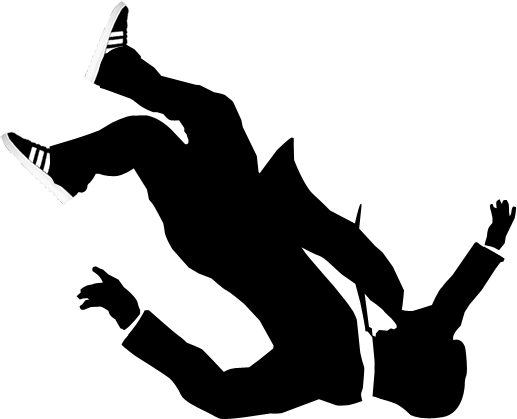Happy families.
Produced by
Anthony Calzadilla
As reality fades away, all that's left are images from an unreal world, spiralling out of control.
Executive ProducerAndyClarke
Don accepts his fate, that his work and his life are one and the same.
He sits, his arm outstretched across the back of a chair. A cigarette between his fingers.